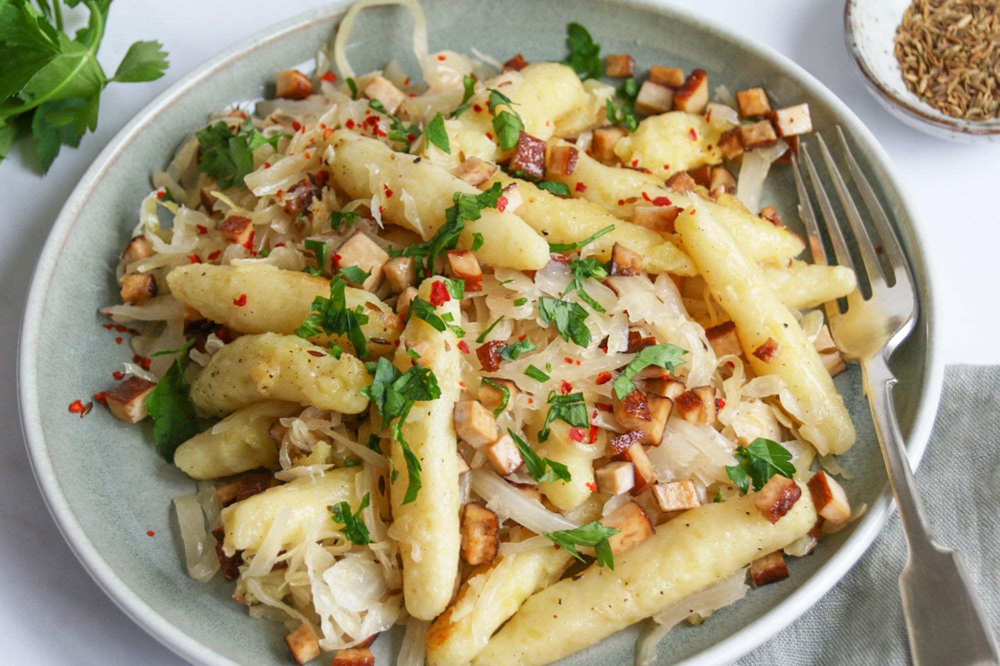
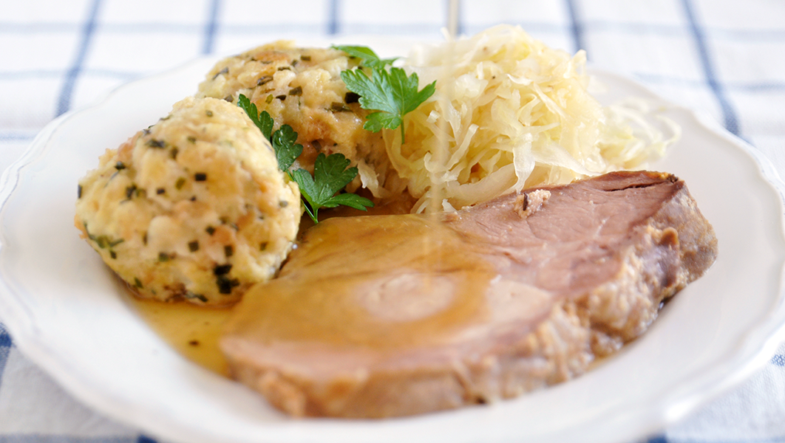

Hauptspeisen
Schupfnudeln
Schupfnudeln sind längliche Kartoffelteig-Nudeln, die in der Pfanne goldbraun gebraten und oft mit Sauerkraut, Speck oder als süße Variante mit Mohn und Zucker serviert werden.
Schweinebraten
Schweinebraten mit Knödeln und Bratkartoffeln ist eine klassische Kombination, die traditionell serviert wird und besonders im Herbst und Winter beliebt ist.

Oberösterreichische Surbratl
Geselchtes Schweinefleisch, das geräuchert und dann gebraten wird, oft mit Knödeln und Kraut serviert.
